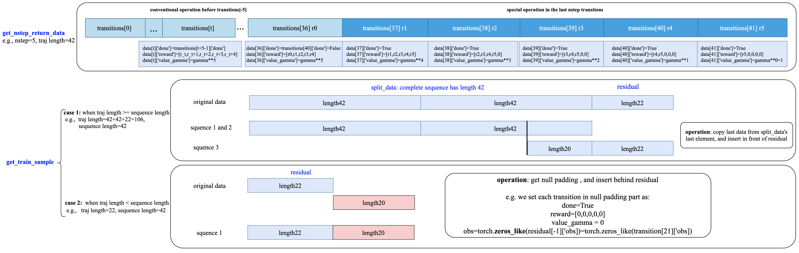

How to use RNN¶
Introduction to RNN¶
Recurrent neural network (RNN) is a class of neural network where connections between nodes form a directed graph along a temporal sequence. This allows it to exhibit temporal dynamic behavior. Derived from feedforward neural networks, RNNs can use their internal state (memory) to process variable length sequences of inputs. This makes them applicable to tasks such as unsegmented, connected handwriting recognition or speech recognition.
In deep reinforcement learning, RNN is first used in DRQN (Deep Recurrent Q-Learning Network), which aims to solve the problem of paritial observation in atari games. After that, RNN has become an important method to solve the environments of complex temporal dependence.
After many years of research, RNN has many variants like LSTM, GRU, etc. The core update process still remains similar. In every timestep \(t\) in MDP, agent needs observation \(s_t\) and historical observations \(s_{t-1}, s_{t-2}, ...\) to infer \(a_t\). This requires RNN agent to hold previous observations and maintain RNN hidden states.
DI-engine supports for RNN , and provides easy to use API to allow users to implement variants of RNN.
RNN example in DI-engine¶
policy |
RNN-support |
|---|---|
a2c |
× |
atoc |
× |
c51 |
× |
collaq |
√ |
coma |
√ |
ddpg |
× |
dqn |
× |
il |
× |
impala |
× |
iqn |
× |
ppg |
× |
ppo |
× |
qmix |
√ |
qrdqn |
× |
r2d2 |
√ |
rainbow |
× |
sac |
× |
sqn |
× |
Use RNN in DI-engine can be described as the following precedures.
Build your RNN model
Wrap you model in policy
Arrange original data to time sequence
Initialize hidden state
Burn-in(Optional)
Build a Model with RNN¶
You can use either DI-engine’s built-in recurrent model or your own RNN model.
Use DI-engine’s built-in model. DI-engine’s DRQN provide RNN support(default to LSTM) for discrete action space environments. You can easily specify model type in config or set model in policy to use it.
# in config file
policy=dict(
...
model=dict(
type='drqn',
import_names=['ding.model.template.q_learning']
),
...
),
...
# or set policy default model
def default_model(self) -> Tuple[str, List[str]]:
return 'drqn', ['ding.model.template.q_learning']
Use customized model. To use customized model, you can refer to Set up Policy and NN model. To adapt your model into DI-engine’s pipline with minimal code changes, the output dict of model should contain
'next_state'key.
class your_rnn_model(nn.Module):
def forward(x):
# the input data `x` must be a dict, contains the key 'prev_state', the hidden state of last timestep
...
return {
'logit': logit,
'next_state': hidden_state,
...
}
Note
DI-engine also provide RNN module. You can use get_lstm() function by from ding.torch_utils import get_lstm. This function allows users to build LSTM implemented by ding/pytorch/HPC.
Use model wrapper to wrap your RNN model in policy¶
As RNN model need to maintain hidden state of data, DI-engine provide
HiddenStateWrapper for it. Users only need to add a wrapper in
policy’s learn/collect/eval initialization to wrap model. The wrapper
will help agent to keep hidden states after model forward and send
hidden states to model in next time forward.
# In policy
class your_policy(Policy):
def _init_learn(self) -> None:
...
self._learn_model = model_wrap(self._model, wrapper_name='hidden_state', state_num=self._cfg.learn.batch_size)
def _init_collect(self) -> None:
...
self._collect_model = model_wrap(
self._model, wrapper_name='hidden_state', state_num=self._cfg.collect.env_num, save_prev_state=True
)
def _init_eval(self) -> None:
...
self._eval_model = model_wrap(self._model, wrapper_name='hidden_state', state_num=self._cfg.eval.env_num)
Note
Set save_prev_state=True in collect model’s wrapper to make sure there is previous hidden state for learner to initialize RNN.
More details of HiddenStateWrapper can be found in model
wrapper, the work flow of it can be shown as
the following figure:

Data Arrangement¶
The mini-batch data used for RNN is different from usual RL data, it
should be arranged in time series. For DI-engine, this process happens in
collector. Users need to specify unroll_len in config to make
sure the length of sequence data matches your algorithm. For most cases,
unroll_len should be equal to RNN’s historical length (a.k.a sequence length), but in some cases it’s not the case, e.g.
In r2d2, we use burn-in operation, the sequence length is equal to
unroll_len plus burnin_step. This will be explained in following section.
For example, the original sampled data is \([x_1,x_2,x_3,x_4,x_5,x_6]\), each \(x\) represents \([s_t,a_t,r_t,d_t,s_{t+1}]\) (maybe \(log_\pi(a_t|s_t)\), hidden state, etc in it), and we need RNN’s sequence length to be 3.
1. n_sample >= unroll_len and unroll_len is divided by n_sample :
e.g. unroll_len=3, the data will be arranged as \([[x_1,x_2,x_3],[x_4,x_5,x_6]]\).
2. n_sample >= unroll_len and unroll_len is not divided by n_sample :
residual data will be filled by last sample by default, e.g. if n_sample=6 and unroll_len=4 , the data will be arranged as
\([[x_1,x_2,x_3,x_4],[x_3,x_4,x_5,x_6]]\).
3. n_sample < unroll_len: e.g. if n_sample=6 and unroll_len=7, by default, alg. use null_padding method, the data will be arranged as
\([[x_1,x_2,x_3,x_4,x_5,x_6,x_{null}]]\). \(x_{null}\) is similar to \(x_6\) but its done=True and reward=0.
Here, taking the r2d2 algorithm as an example, in r2d2, in method _get_train_sample it calls the function
get_nstep_return_data and get_train_sample.
def _get_train_sample(self, data: list) -> Union[None, List[Any]]:
data = get_nstep_return_data(data, self._nstep, gamma=self._gamma)
return get_train_sample(data, self._unroll_len_add_burnin_step)
More details about the two data processing functions can be found in ding/rl_utilrs/adder.py , the work flow of its data processing is given in the following figure:

Burn-in(in R2D2)¶
This concept comes from R2D2 (Recurrent Experience Replay in Distributed Reinforcement Learning). When using LSTM, the most naive way is:
1.use a zero start state to initialize the network at the beginning of sampled sequences.
2.replay whole episode trajectories. The former brings bias and the latter is hard to implement.
Burn-in allow the network a
burn-in period by using a portion of the replay sequence only for
unrolling the network and producing a start hidden state, and update the
network only on the remaining part of the sequence.
In DI-engine, r2d2 use the n-step td error self._nstep is the number of n.
sequence length = burnin_step + unroll_len.
so in the config, unroll_len should be set to sequence length - burnin_step.
In this setting, the original unrolled obs sequence, is split
into burnin_nstep_obs , main_obs and marget_obs. The burnin_nstep_obs is
used to calculate the init hidden state of rnn for the calculation of the q_value, target_q_value, and target_q_action.
The main_obs is used to calculate the q_value, in the following code, [bs:-self._nstep] means using the data from
bs timestep to sequence length - self._nstep timestep.
The target_obs is used to calculate the target_q_value.
This data process can be implemented by the following code:
data['action'] = data['action'][bs:-self._nstep]
data['reward'] = data['reward'][bs:-self._nstep]
data['burnin_nstep_obs'] = data['obs'][:bs + self._nstep]
data['main_obs'] = data['obs'][bs:-self._nstep]
data['target_obs'] = data['obs'][bs + self._nstep:]
In R2D2, if we use burn-in, the reset way is not so simple.
When we call the
forwardmethod ofself._collect_model, we setinference=True, each time call it, we pass into only one timestep data, so we can get the hidden state of rnn:prev_stateat each timestep.When we call the
forwardmethod ofself._learn_model, we setinference=False, whenself._learn_modelis not theinferencemode, each call we pass into a sequence data, theprev_statefiled of their output is only the hidden state in last timestep, so we can specify which timesteps of hidden state to store in the way that specify the parametersaved_hidden_state_timesteps(a list, which implementation is in ding/model/template/q_learning.py ) when we call theforwardmethod ofself._learn_model. As we can see in the following code, we first pass thedata['burnin_nstep_obs']into theself._learn_modelandself._target_modelfor obtaining the hidden_state in different timesteps specified in the listsaved_hidden_state_timesteps, which will be used in the latter calculation ofq_value,target_q_value,target_q_action.Note that here in r2d2, we specify that
saved_hidden_state_timesteps=[self._burnin_step, self._burnin_step + self._nstep], and after unrolling the rnn, theburnin_outputandburnin_output_targetwill save the hidden_state in corresponding timesteps in their fieldsaved_hidden_state.
Note
In DI-engine, each time when we call the forward method of RNN model and want to unroll the RNN model again, we should consider reset it with the proper hidden state
using the burnin_output['saved_hidden_state'] , because inherently the init hidden state of the RNN model is set as the last timestep hidden state when last time we unroll the RNN model.
def _forward_learn(self, data: dict) -> Dict[str, Any]:
# forward
data = self._data_preprocess_learn(data)
self._learn_model.train()
self._target_model.train()
# use the hidden state in timestep=0
self._learn_model.reset(data_id=None, state=data['prev_state'][0])
self._target_model.reset(data_id=None, state=data['prev_state'][0])
if len(data['burnin_nstep_obs']) != 0:
with torch.no_grad():
inputs = {'obs': data['burnin_nstep_obs'], 'enable_fast_timestep': True}
burnin_output = self._learn_model.forward(
inputs, saved_hidden_state_timesteps=[self._burnin_step, self._burnin_step + self._nstep]
)
burnin_output_target = self._target_model.forward(
inputs, saved_hidden_state_timesteps=[self._burnin_step, self._burnin_step + self._nstep]
)
self._learn_model.reset(data_id=None, state=burnin_output['saved_hidden_state'][0])
inputs = {'obs': data['main_obs'], 'enable_fast_timestep': True}
q_value = self._learn_model.forward(inputs)['logit']
self._learn_model.reset(data_id=None, state=burnin_output['saved_hidden_state'][1])
self._target_model.reset(data_id=None, state=burnin_output_target['saved_hidden_state'][1])
next_inputs = {'obs': data['target_obs'], 'enable_fast_timestep': True}
with torch.no_grad():
target_q_value = self._target_model.forward(next_inputs)['logit']
# argmax_action double_dqn
target_q_action = self._learn_model.forward(next_inputs)['action']
For more details of RNN and burn-in, you can refer to ding/policy/r2d2.py.